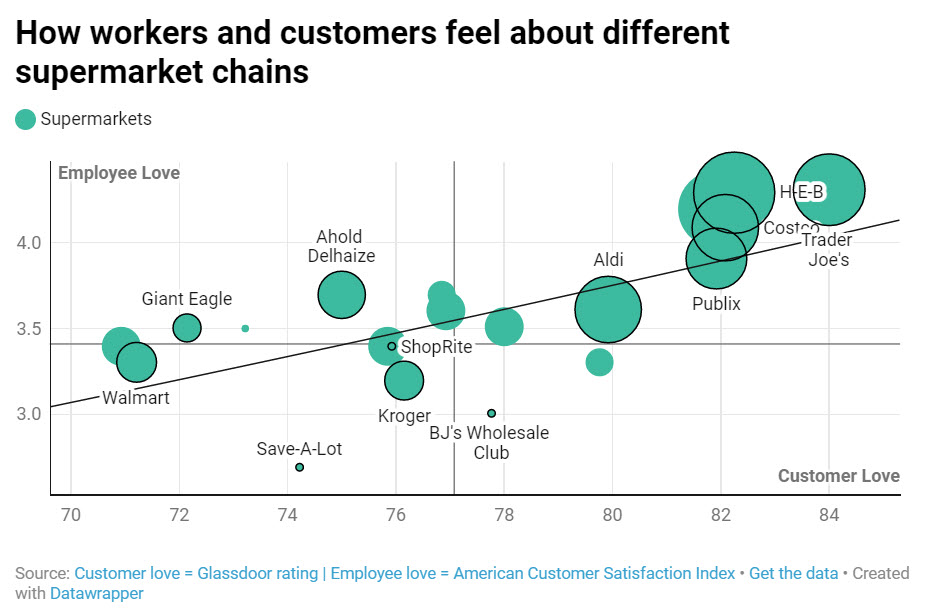

Data guy. Markets, business, sport, love. Show, don‘t tell.
Contact me at ddarmstrong@gmail.com or @fuertebrazos.
Employees and customers in love
When employees are happy, customers are too. It‘s one of the secrets to revenue growth, so even the CFO may crack a smile.
When they sell too hard, watch out: What a sentiment algorithm tells us about how we advertise to the opposite sex.
Nine men (and one woman) rule a half-dozen of the biggest companies in America by serving on each other‘s boards.
Pipelines to the NFL: Musical chairs...and Notre Dame
Over the last hundred years, the pros have come from everywhere (even New York City). But there has been one near-constant: Notre Dame.
From Houdini to Bogart to Gershwin to Obama, a few dozen blocks in northern Manhattan were home to more (and more diverse) stars than anywhere in America.